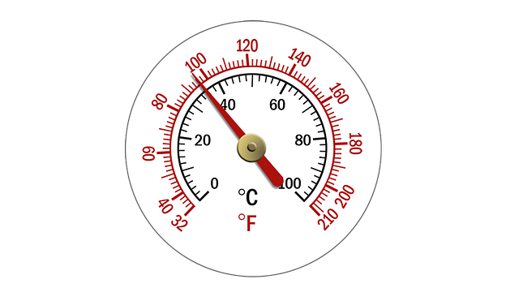
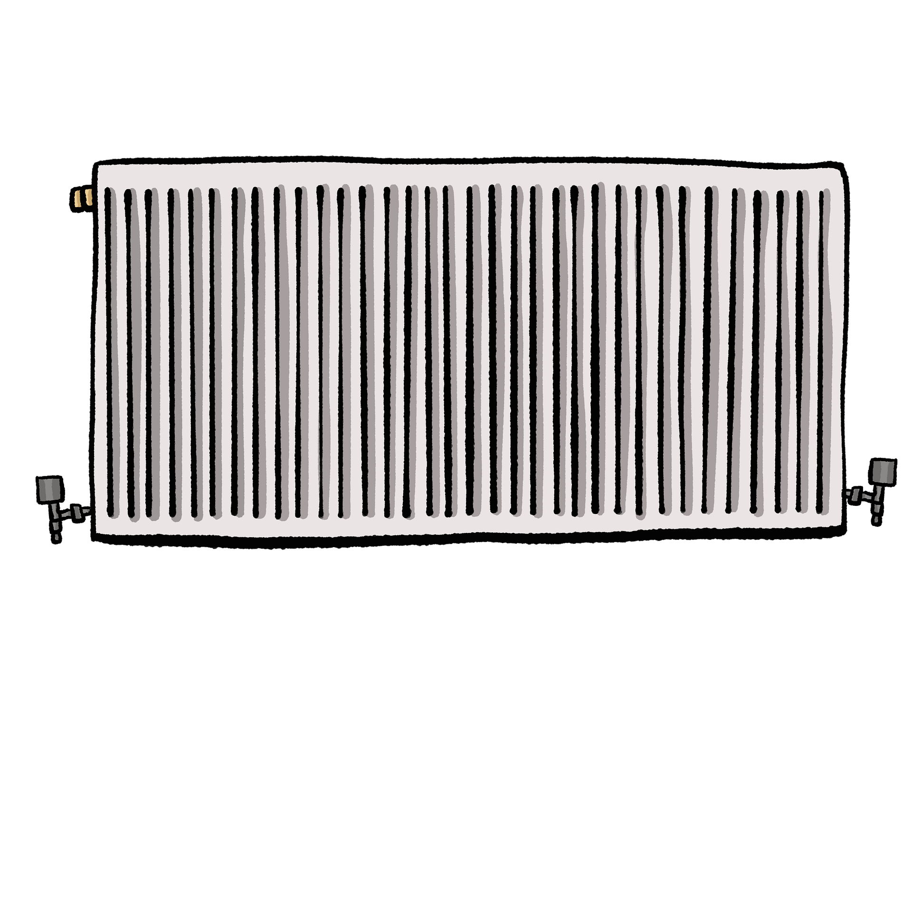

Bakım
Kombi Su Basıncı Neden Düşer?
Kombinizin su basıncı sürekli düşüyorsa bu adımları takip ederek sorunu tespit edebilirsiniz...

Rehber
Peteklerin Altı Neden Isınmaz?
Peteklerin üstü sıcak altı soğuk kalıyorsa, temizlik zamanı gelmiş olabilir. İşte nedenleri...
Petek Kontrol Listesi:
- Hava Alma: Petek anahtarı ile üst kısımdaki prüjörden hava gelip gelmediğini kontrol edin.
- Vana Pozisyonu: Alt ve üst vanaların tamamen açık (saat yönünün tersine) olduğundan emin olun.
- Reglaj Ayarı: Kombiye en yakın peteklerin vanalarını biraz kısıp, uzaktakileri tam açarak ısı dengesini sağlayın.
- Filtre Temizliği: Kombi altındaki dönüş hattı filtresinin tıkanmış olma ihtimali yüksektir (Servis gerektirebilir).
Önemli: Eğer peteğin üstü sıcak, altı buz gibi ise bu genellikle içerideki çamurlaşmanın habercisidir ve petek temizliği vaktiniz gelmiştir.
Tasarruf
Faturayı Düşürmenin 5 Yolu
Kış aylarında doğalgaz faturanızı %30 oranında düşürmek için uygulayabileceğiniz basit yöntemler.
Tasarruf ve Verim Rehberi:
- Oda Termostatı Kullanın: Kombinin gereksiz çalışmasını önleyerek faturanızda %15-20 oranında doğrudan tasarruf sağlar.
- Petek Temizliği: İç yüzeyi kireçlenmiş petekler ısıyı iletmez. Her 2 yılda bir profesyonel temizlik yaptırın.
- Vana Ayarı: Kullanmadığınız odaların kapısını kapalı tutun ve petek vanalarını tamamen kapatmak yerine en düşük seviyeye getirin.
- Gece Modu: Kombiyi gece tamamen kapatmak evi soğutur; bunun yerine dereceyi 1-2 birim düşürmek daha az yakıt harcatır.
- Menfezleri Kapatmayın: Havalandırma menfezlerini kapatmak yanma kalitesini düşürür ve gaz sarfiyatını artırır.
Uzman Notu: Düzenli kombi bakımı, cihazın en az yakıtla en yüksek ısıyı vermesini sağlar.
Sorununuz hala devam mı ediyor?
Hemen teknik ekibimizle iletişime geçin, aynı gün destek alın.
Şimdi Ara